Inside a Data Center
A visual guide to understanding, designing, and speaking the language of data centers. Free 9-page preview, no strings attached.
Get the free previewIn the dynamic world of BIM Modeling, mastering Revit best practices is essential for professionals aiming to excel in their projects. This guide will explore key strategies to enhance your Revit workflow, focusing on efficiency, accuracy, and quality. We’ll cover crucial aspects such as:
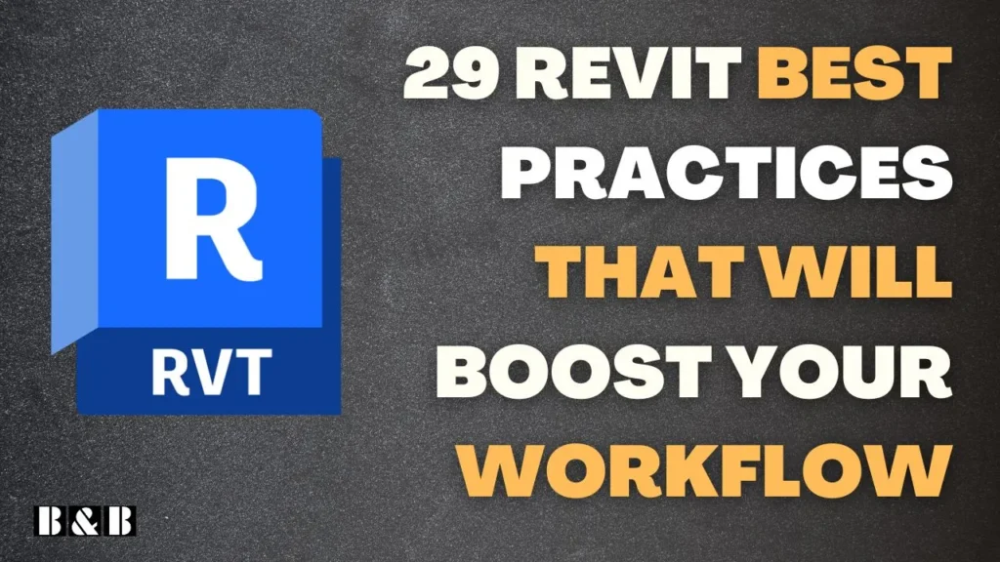
- Optimizing project setup and file management
- Enhancing modeling techniques
- Improving collaboration and performance
- Implementing quality control measures
- Automation using Dynamo and RevitAPI
- Documentation & Task Management
Whether you’re an experienced Revit user or just starting out, these practices will help you work smarter, reduce errors, and create more robust models. Let’s dive into the essential Revit best practices that will elevate your BIM skills and lead to more successful project outcomes.
1. Project Setup and Organization
Effective project setup and organization are crucial for a smooth Revit workflow. By implementing these best practices, you can create a more efficient and manageable project environment.
1.1 Establish Naming Conventions
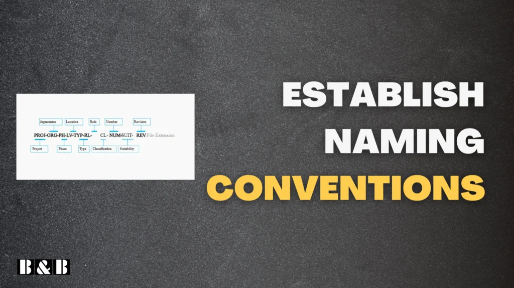
Implementing consistent naming conventions for all Revit elements is considered one of Revit best practices, it is essential for maintaining order and clarity in your project. This practice ensures that team members can easily locate and identify elements, reducing confusion and improving collaboration. Develop a standardized naming system, like in ISO-19650 that includes relevant information such as element type, level, and function.
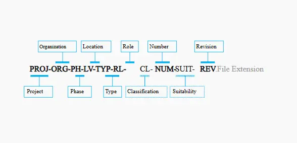
Read this Blog Post from BIMicon to learn more about the ISO-1950 naming convention
1.2 Create Control Views
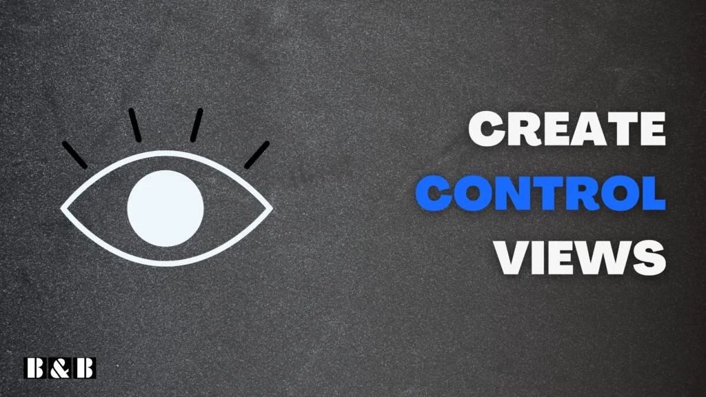
Control views are specialized views that focus on specific elements, making it easier to manage and review your model. Incorporate the following control views into your project:
- Room and room separation-only views: These views allow you to focus on space planning and room layouts without the distraction of other elements and to detect if there is really need to add or delete some room separation lines.
- Walls-only views: Use these views to review and edit wall placements and properties efficiently to anticipate walls that overlap.
- Floors-only views: These views help you manage floor elements and their relationships to other building components and anticipate warnings related to overlapped floors.
By utilizing these control views, you can streamline your workflow and reduce the risk of errors when working with specific element types.
1.3 Use Temporary Views for Testing
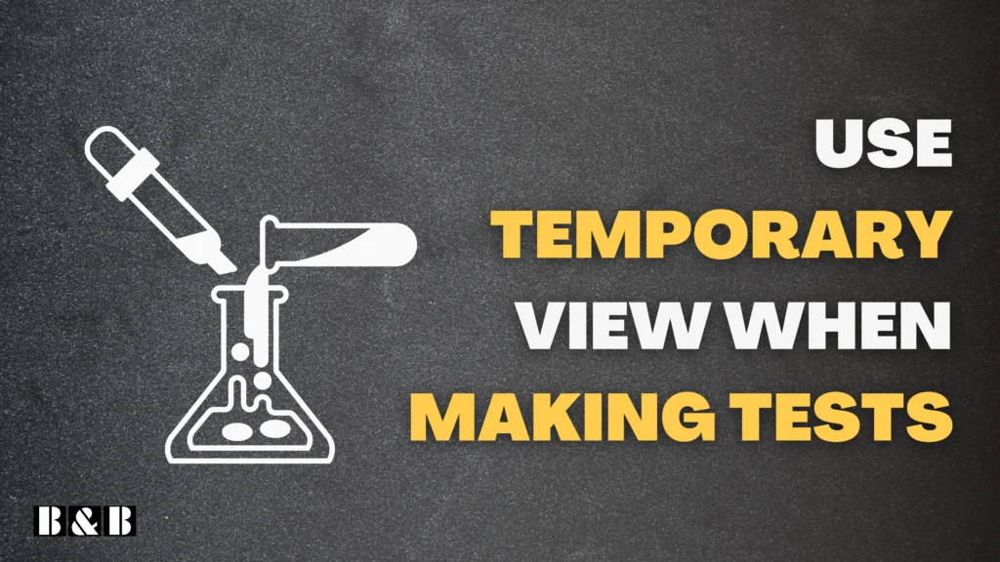
Creating temporary views is a Revit best practice when conducting tests or reviewing specific areas of the model. This avoids cluttering project views and keeps standard views consistent and professional for team use.
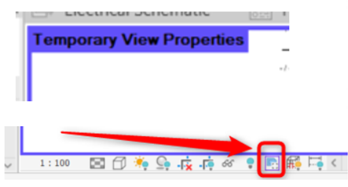
1.4 Delete Unused Views and Name Views Consistently
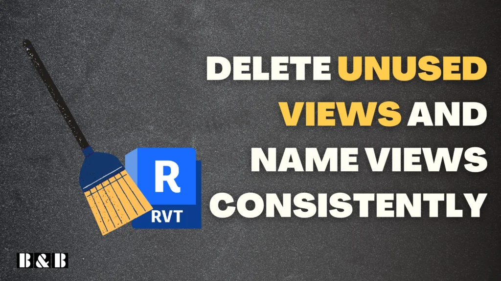
A key Revit best practice is to regularly audit and delete unused views. Coupled with clear and consistent naming conventions, this improves project organization and simplifies navigation for team members. For example, naming a view “A-01-FloorPlan-GroundFloor” ensures clarity and consistency.
1.5 Regular Model Maintenance
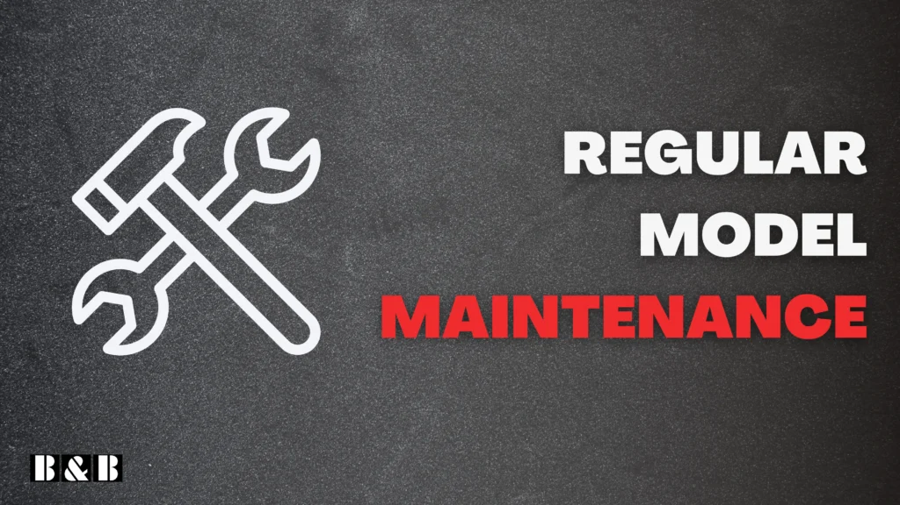
To keep your project running smoothly, it’s important to perform regular maintenance tasks:
- Purge unused elements: Regularly review and purge any unused elements in Revit, this includes families, materials, groups, and even dwg links that are no longer used in your model.
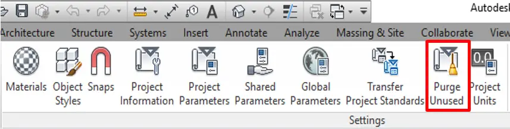
- Delete unused view templates and filters: Regularly review and remove any view templates or filters that are no longer needed. This practice helps to reduce file size and improve performance, to do this you can use PyRevit purge model scripts.
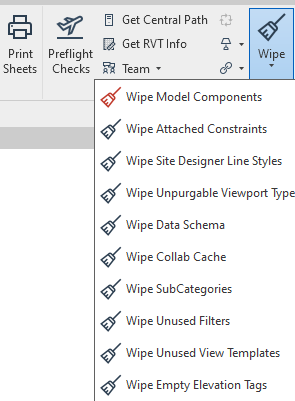
- Compress imported raster images: Minimize file size by compressing any imported raster images in your project, to use this use Image resizer by PowerToys by Microsoft.
By following these project setup and organization practices, you’ll create a more efficient Revit environment, leading to improved productivity and reduced errors throughout your project lifecycle.
2. File Management
2.1 Always Create a Backup
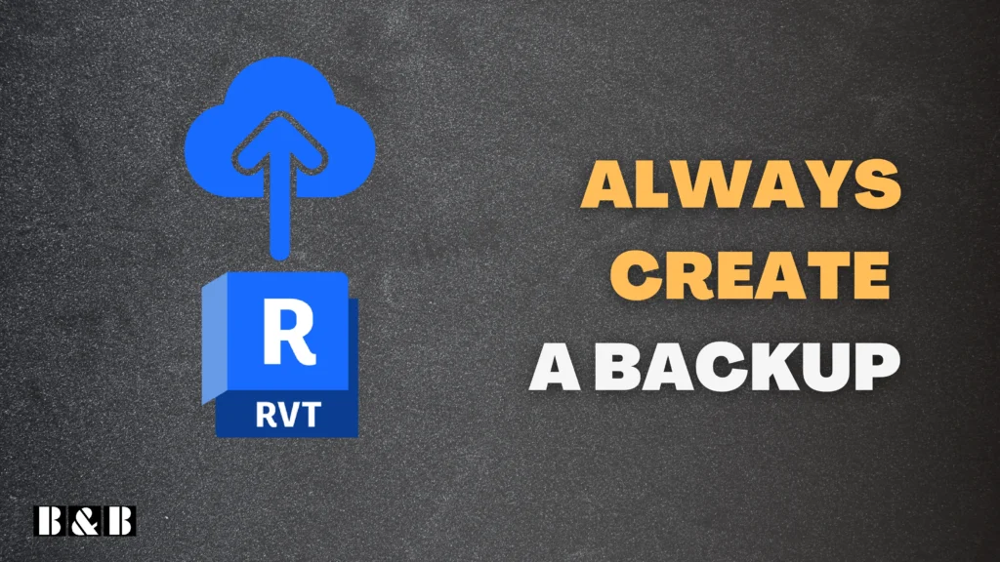
Creating backups is also one of Revit best practices, it is crucial to safeguard your work from data loss or file corruption. Revit allows you to enable backup settings to save incremental versions automatically. Additionally, maintain off-site backups for linked files (CAD/RVT) in cloud storage or external drives. Encourage team members to save local backups regularly to ensure a fallback option in case of unexpected issues.
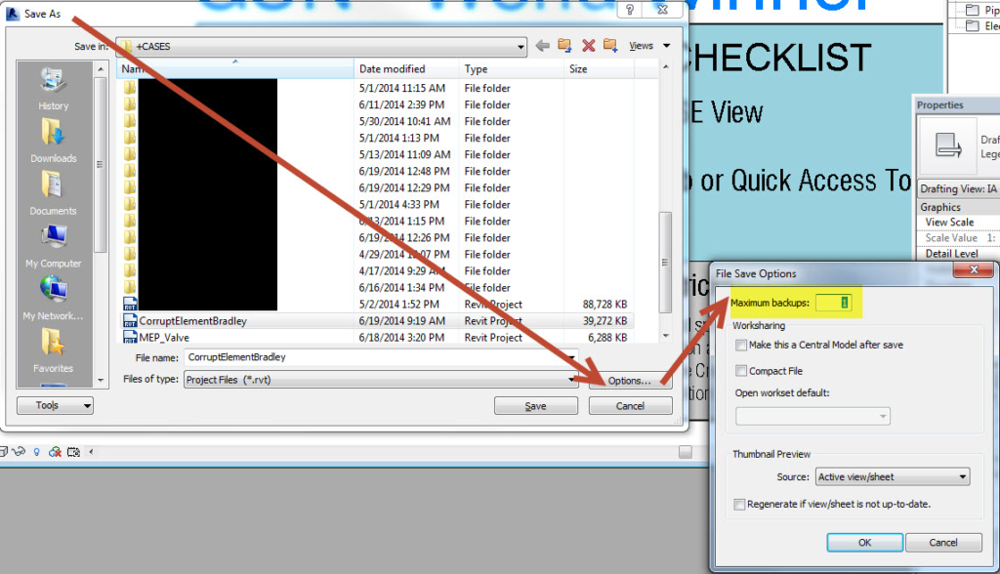
2.2 Regularly Create a New Central File
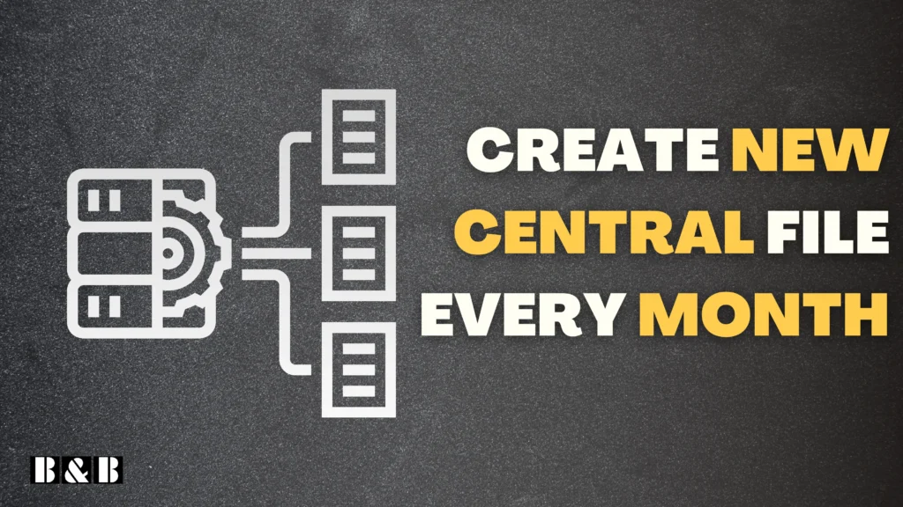
One of the essential Revit best practices is to recreate the central file every month or twice a month. This refreshes the model, reducing file size and resolving potential corruption issues that may accumulate over time. Always inform the team and synchronize all work before starting this process to ensure a smooth transition.
2.3 Never Import CAD Files; Instead, Link Them
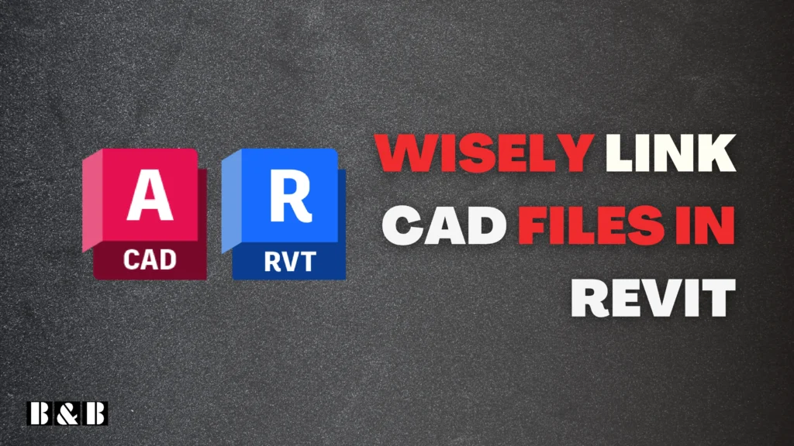
Importing CAD files directly into Revit can introduce unnecessary layers and elements, increasing file size and clutter. Instead, use the Link CAD option to maintain a cleaner project file. Before linking, clean the CAD file in AutoCAD by purging unused elements and simplifying layers. To limit the scope of linked files, enable the Current View Only setting where applicable.

Read this Blog post, to learn how to clean DWG File to avoid error while linking them into Revit.
2.4 Ensure CAD and RVT Links are Pinned
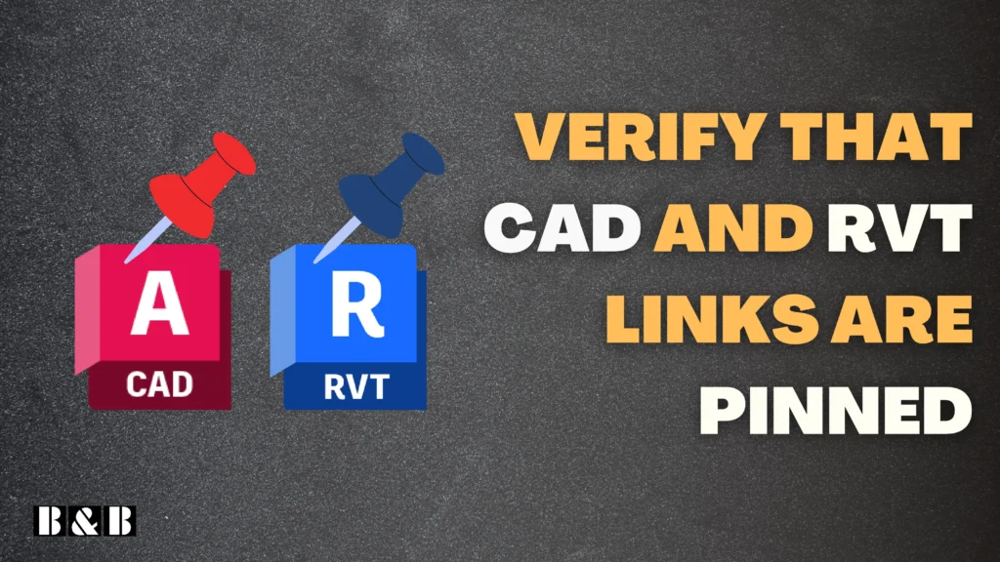
Pinning CAD and RVT links prevents accidental displacement, ensuring their positions remain intact throughout the project. After linking the file, right-click and select Pin. For added security, configure Pin/Unpin Settings to prevent accidental unpinning. This simple step can save significant time during audits and coordination meetings by maintaining consistent references.
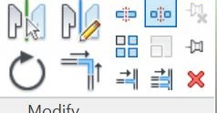
3. Modeling Best Practices
3.1 Avoid Using “Pick Line” if Your DWG is Not Clean
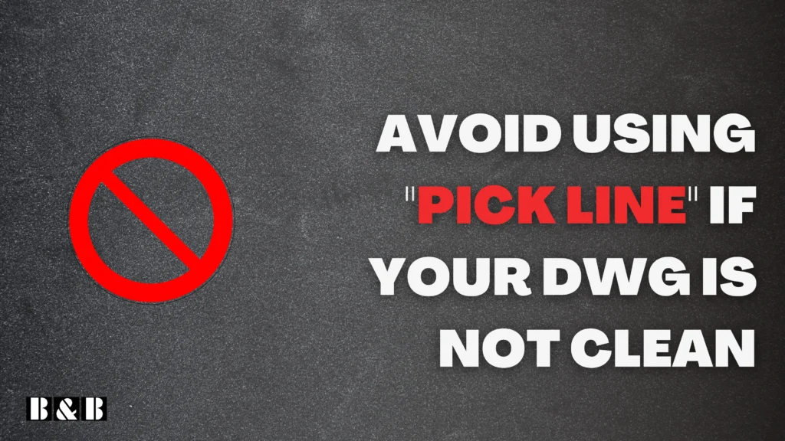
The “Pick Line” tool is convenient for creating elements, but using it on unclean DWG files can lead to inaccuracies, off-axis lines, and heavy-loaded files in your Revit model. Before using this tool, clean up the DWG in AutoCAD by removing redundant layers and simplifying geometry. This ensures you’re working with accurate and efficient reference data, reducing potential errors in the Revit model.
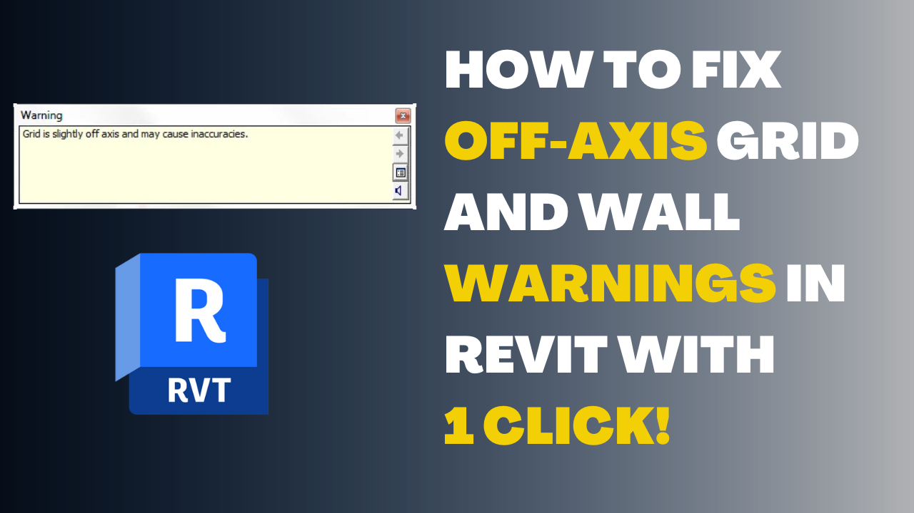
Read this blog post to learn how to fix off-axis grid and wall warnings in Revit
3.2 Resolve RVT Warnings Promptly
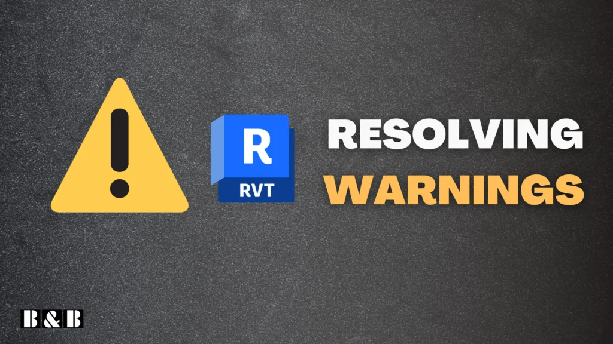
Unresolved warnings in Revit can accumulate and degrade model performance, complicating project workflows. Regularly review and address warnings using the Warnings tool in the Manage tab. Prioritize critical issues like overlapping elements or duplicated instances, as these can affect schedules, views, and clash detection. Incorporating warning resolution into your routine helps maintain a healthy, error-free model.
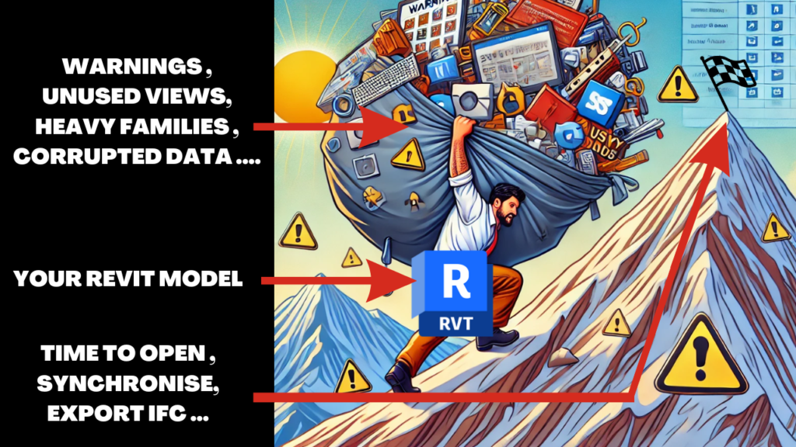
3.3 Avoid Using In-Place Families
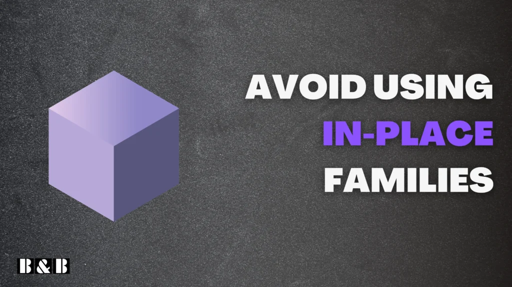
Limit in-place families to rare, unique elements. As a Revit best practice, rely on standard families that can be reused and managed efficiently across projects. This reduces file complexity and enhances performance.
How to Convert In-place Family To Loadable Revit Family
3.4 Limit the Use of Groups
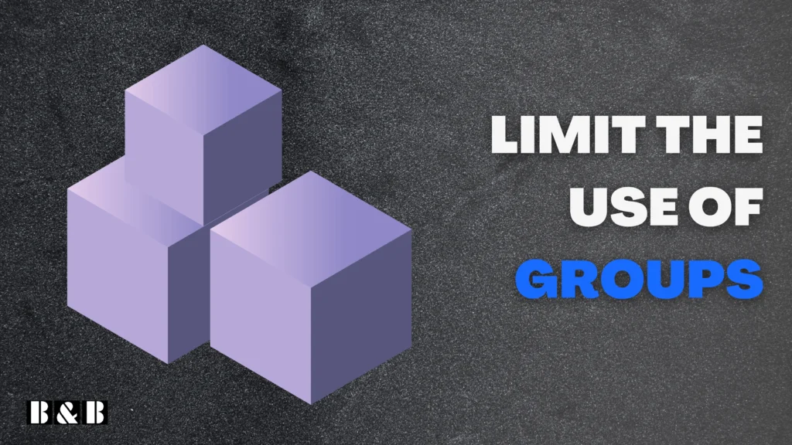
Overusing groups can lead to duplicated elements and performance issues. A top Revit best practice is to convert frequently reused groups into families. This approach enhances control, consistency, and reuse across projects.
3.5 Compact Your Revit Model Regularly
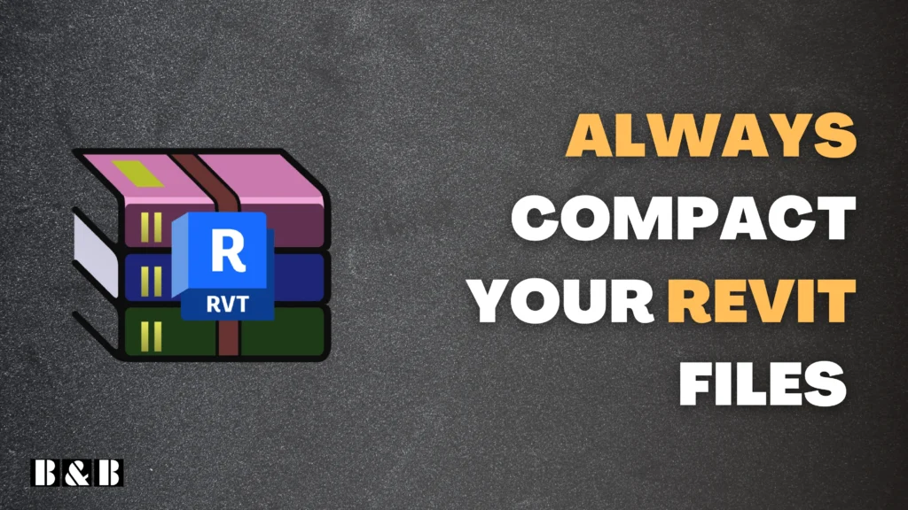
Enable the Compact Central Model option during daily synchronizations. This Revit best practice reduces file size, enhances performance, and minimizes the risk of model corruption. A compact model is easier to manage and share across the team.
4. Family Management
4.1 Prefer Creating Families from Scratch Instead of Downloading Them
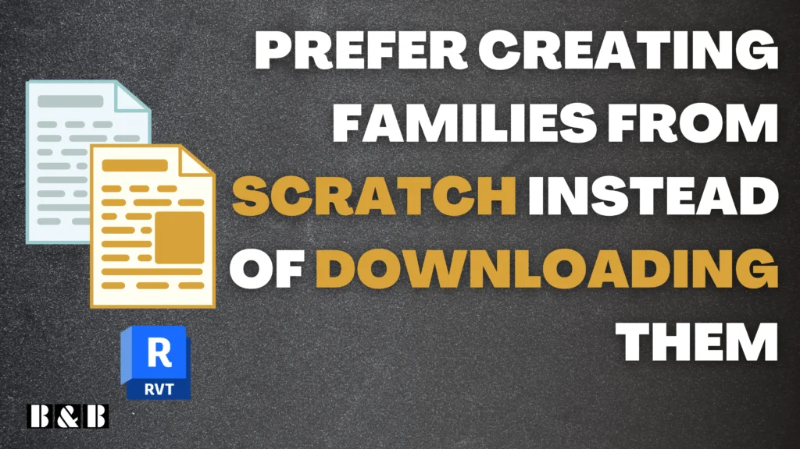
Downloaded families, like families from BIMobject of RevitDynamo often come with unnecessary parameters, excessive detail, or compatibility issues, which can bloat the model and cause performance issues. Instead, create families from scratch in Revit, tailored to your project’s specific needs. This ensures the geometry, parameters, and behavior align with your standards while maintaining a clean and efficient model.
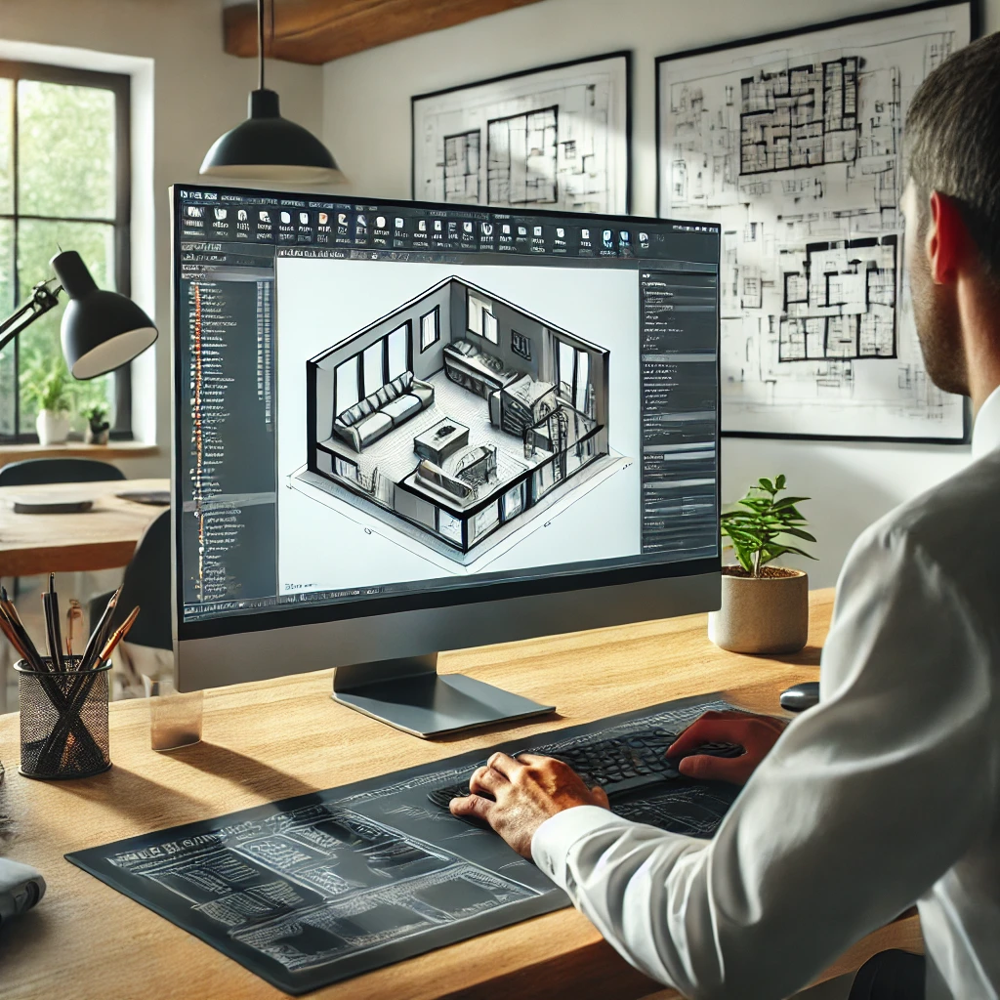
4.2 Use Your Own Shared Parameters
Shared parameters are essential for consistent data across your project. Using your predefined shared parameters ensures alignment with project requirements and company standards, considering that shared parameters can be tagged and scheduled but other parameters can’t be tagged like family parameters. Avoid relying on external libraries or imported parameters to reduce inconsistencies and conflicts. Always document shared parameters to make them reusable and understandable for the entire team.
To learn more about different types of Revit parameters, you can check this blog post from Quadmeta
4.3 Avoid Adding Excessive Information to Families
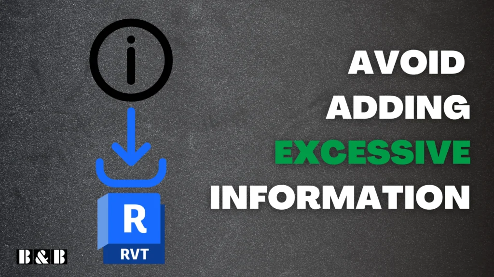
When creating Revit families, ensure that you model only the elements needed for the project’s current phase, as defined by the BIM Execution Plan (BEP), Level of Development (LOD), and Level of Geometry (LOG). For instance, during the Schematic Design phase (e.g., RIBA Stage 1) or at LOD 200, it is unnecessary to include details like the exact material, cost, or manufacturer for doors. Overloading families with excessive data or intricate geometry at early stages can inflate file sizes and degrade performance. Instead, align the detail level with the project’s requirements to maintain a balance between efficiency and precision.
4.4 Don’t Over-Create Shared Parameters
Adding too many custom shared parameters can make data management overly complex and reduce efficiency. Leverage Revit’s existing built-in parameters whenever possible, and create new ones only when absolutely necessary. Keeping parameters lean and purposeful ensures easier model navigation and data extraction.
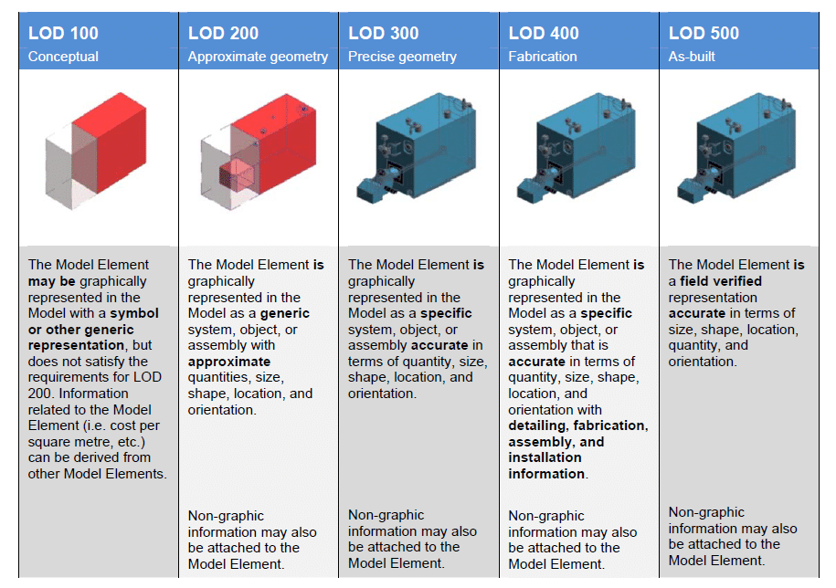
5. Performance Optimization
5.1 Avoid Using Too Many Plugins
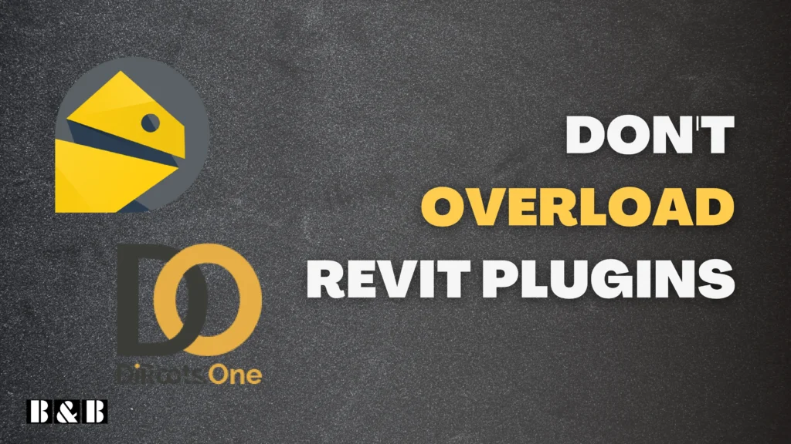
While Revit plugins can enhance Revit’s functionality, excessive use can slow down the software, increase dependency, and introduce compatibility issues. Use only essential plugins vetted for their reliability and relevance to your workflow. Regularly review installed plugins, uninstall unnecessary ones, and consider native Revit tools or Dynamo scripts as alternatives for automation. To manage plugins, you can use DiRoots App Manager to enable or disable plugins according to your needs.
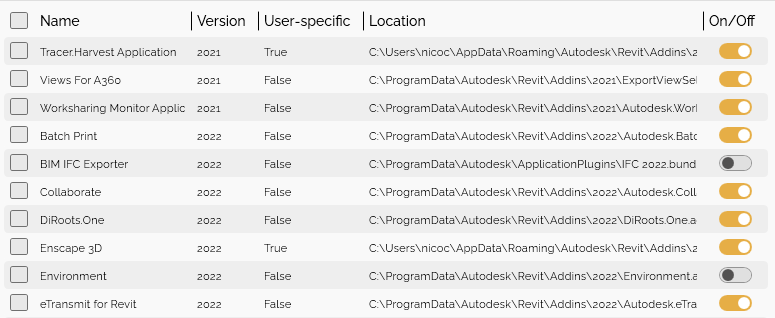

Quickly Enable / Disable Revit Plugins with DiRoots App Manager
5.2 Synchronize with Central Sparingly
Frequent synchronization with the central model can disrupt team workflows and lead to performance bottlenecks, especially on large projects. Instead, sync at logical intervals, such as after completing a significant task or before closing your session. Encourage team members to stagger their sync times during peak hours to minimize conflicts and maintain smoother performance.
5.3 Avoid Synchronizing with Many Opened Views and Sheets
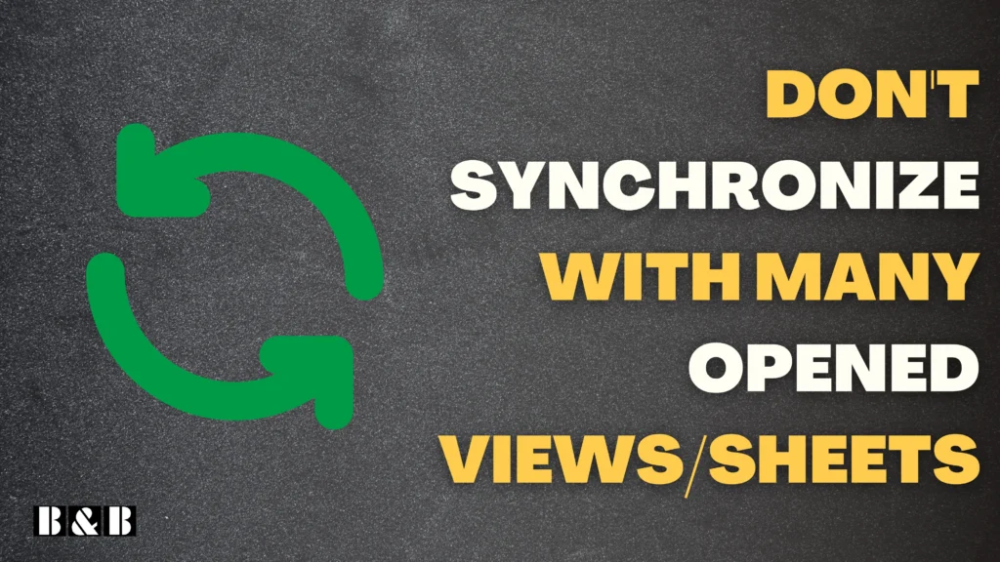
To optimize performance, close unnecessary views and sheets before syncing with the central file. Following this Revit best practice prevents excessive memory usage and reduces the risk of slowdowns or errors during synchronization.
You can use the PyRevit Tool that enables to synchronize with closing all inactive views and sheets.
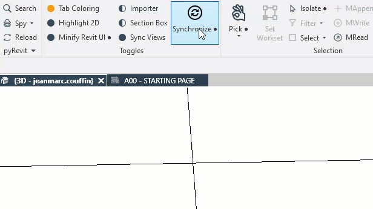
6: Collaboration and Workflow
6.1 Use Worksets Effectively
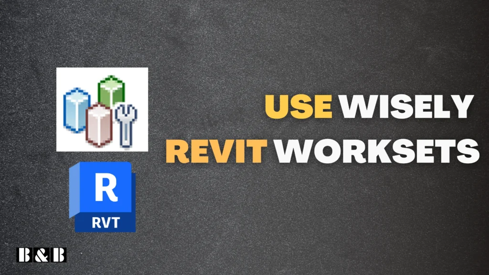
Worksets are critical for multi-user collaboration and efficient model management. Assign worksets logically, such as separating architectural, structural, and MEP elements. Encourage team members to check out only the worksets they need to work on and ensure unused worksets are closed to improve performance. Proper workset management prevents conflicts and improves workflow in shared models.
6.2 Implement Regular Model Audits
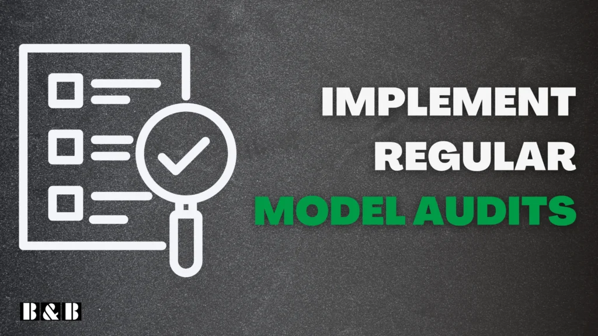
Periodic model audits help identify and resolve issues such as duplicated elements, unused families, or overly complex geometry. Schedule audits at key project milestones or weekly during intensive collaboration phases. Use Revit’s built-in tools or plugins like Model Checker to streamline the process. Regular audits maintain model health and prevent problems from escalating.
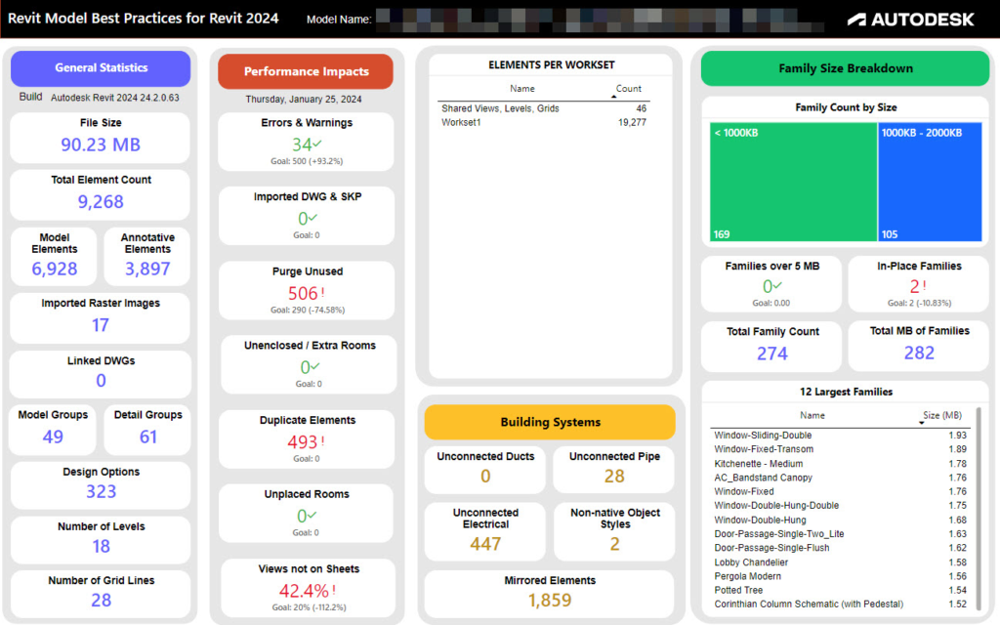
7. Advanced Revit Best Practices : Automation
7.1 Automate Tasks Using Dynamo
Dynamo provides a powerful way to automate repetitive tasks and improve efficiency. For example, you can use it to batch rename views, place elements systematically, or manage parameters across multiple families. However, avoid overly complex scripts that may be difficult to debug or share with team members. Focus on creating reusable and well-documented scripts to streamline workflows.
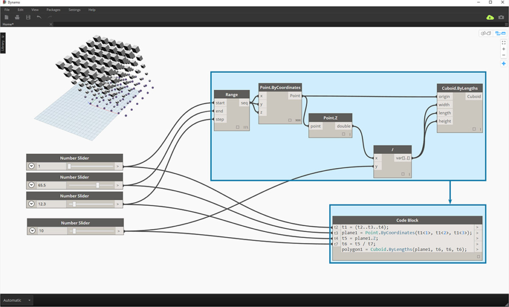
7.2 Learn Revit API for Custom Solutions if Needed
For advanced users, the Revit API offers limitless possibilities for customization and automation. You can develop plugins to solve unique challenges, such as automating data export or creating custom reports. Learning programming languages like Python or C# can empower you to tailor solutions specific to your project needs, enabling greater control and efficiency.
8. Documentation
8.1 Use eTransmit to Share Models
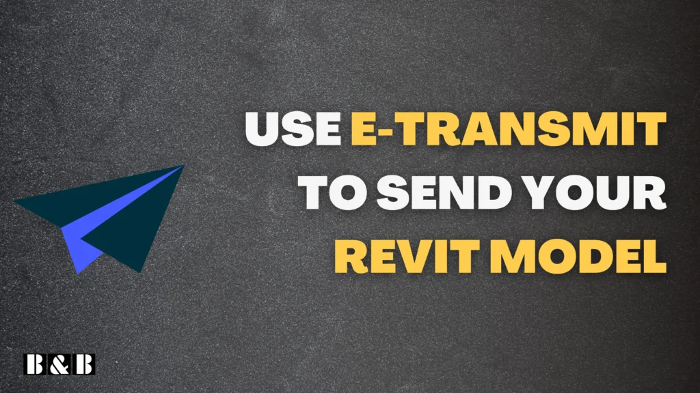
When sharing models with external stakeholders, always use the eTransmit tool. This Revit best practice ensures that all linked files and dependencies are included in the package while cleaning up unnecessary elements, resulting in a tidy and complete model handover.
8.2 Print from a Detached Model for Heavy Models
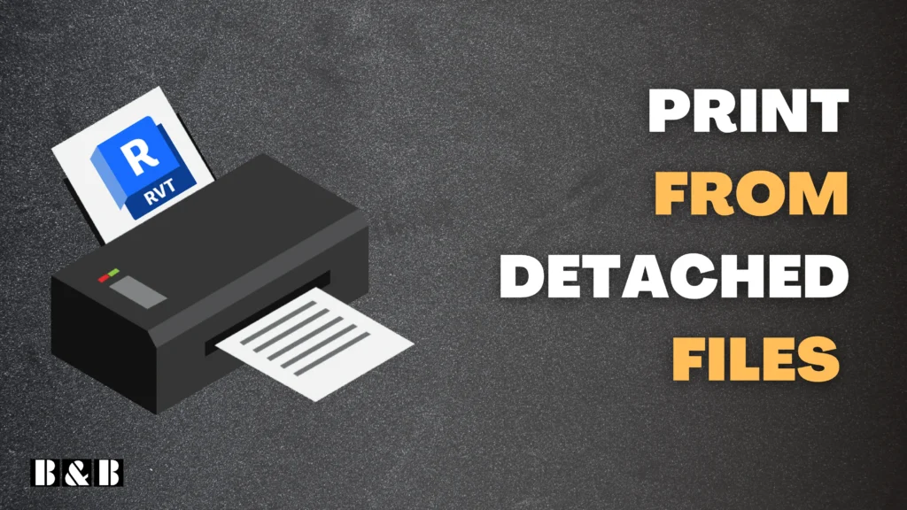
For large projects, detach the model from the central file before printing. This Revit best practice prevents performance issues and avoids unnecessary strain on the central model during documentation tasks. After printing, discard the detached file to maintain clarity and avoid confusion.
8.4 Create and Use View Templates for Efficiency
View templates are essential for maintaining uniformity across views and saving time. Set up templates for different view types (e.g., plans, sections, elevations) with predefined settings for visibility, annotations, and graphics. Apply these templates consistently across the project to streamline the workflow and ensure all views adhere to the same visual and technical standards. This reduces manual adjustments and speeds up documentation.
8.5 Use Notion to Document Daily and Weekly BIM Tasks
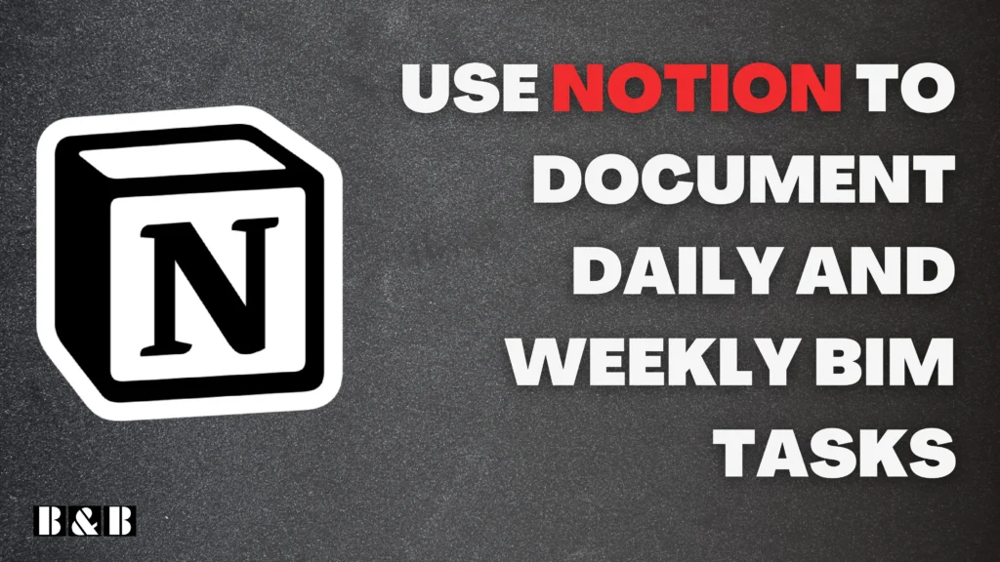
Notion is a powerful tool for organizing and tracking BIM-related tasks on a daily and weekly basis. Create a shared workspace to document tasks, meeting notes, and deadlines for each team member. Use customizable templates to track key milestones, assign responsibilities, and monitor progress. This ensures transparency, enhances collaboration, and serves as a centralized record for all BIM activities, reducing the risk of missed deadlines or miscommunication.
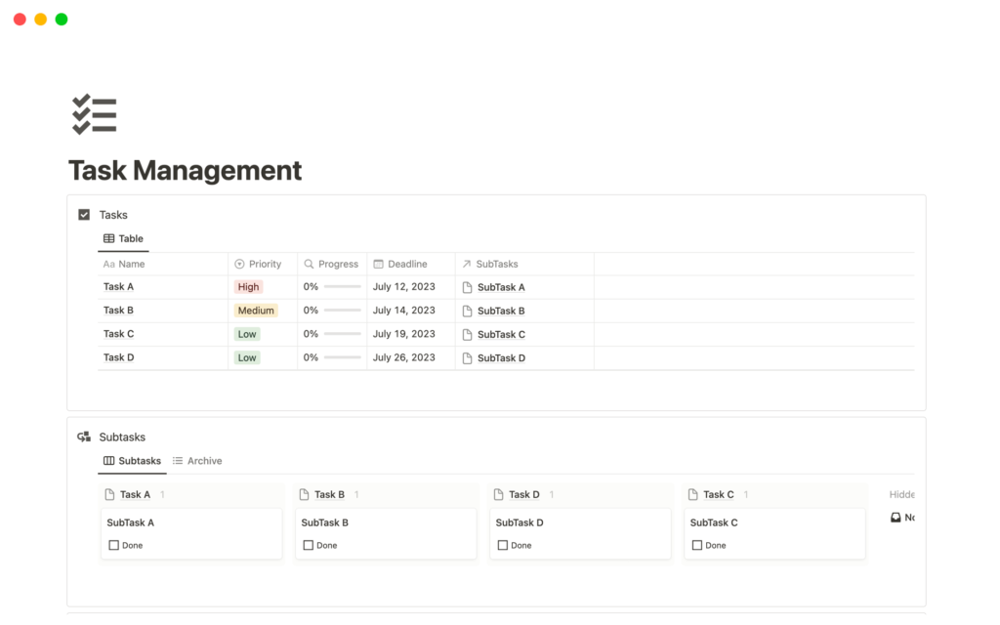
Conclusion
Implementing these 20 best practices in your Autodesk Revit workflow ensures not only a streamlined and efficient project environment but also a higher quality output that aligns with industry standards. From meticulous file management and thoughtful family creation to leveraging advanced techniques like Dynamo, these strategies empower BIM managers to maintain healthy models, foster collaboration, and deliver successful projects. By embedding these habits into your team’s culture, you’ll enhance both productivity and the overall project lifecycle.
Frequently Asked Questions (FAQs)
1. Why is it important to resolve Revit warnings regularly?
Revit warnings, if unresolved, can accumulate and slow down model performance. Critical warnings, such as overlapping or duplicate elements, can also lead to inaccuracies in schedules, quantities, and clash detection. Addressing warnings promptly ensures a clean and efficient model.
2. What’s the benefit of linking CAD files instead of importing them?
Linking CAD files prevents unnecessary layers and data from being permanently embedded in your Revit model, reducing file size and potential errors. It also allows you to manage updates more effectively, as changes made in the linked CAD file are reflected in Revit without re-importing.
3. How does using view templates save time?
View templates standardize visibility, annotation, and graphic settings across multiple views, reducing the need for repetitive manual adjustments. They ensure consistency throughout the project and streamline the documentation process, saving time and effort.
4. When should I use Dynamo in a Revit project?
Dynamo is best used for repetitive or complex tasks that are time-consuming when done manually, such as batch renaming, creating parametric forms, or managing data across families. However, avoid using it for simple tasks that can be done efficiently with native Revit tools.
5. How can Notion improve BIM management?
Notion provides a centralized platform to document, track, and assign BIM-related tasks, from daily logs to weekly milestones. Its customizable templates and collaborative features help keep teams aligned, ensure transparency, and reduce the risk of overlooked responsibilities or missed deadlines.